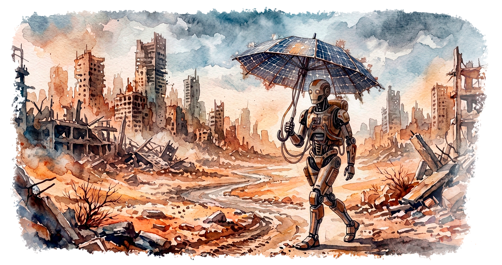
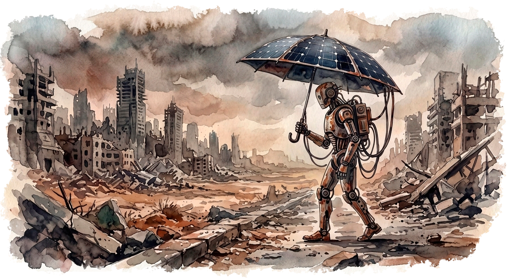

Предисловие
Эта маленькая история, вдохновленная идеей технологической сингулярности. Я придумал её спонтанно, как небольшую сказку на ночь для своей любимой. На концовке истории мы оба не смогли сдержать слез. Я решил, что мне стоит обратить ее в буквы, и потому вы сейчас читаете это произведение, и, надеюсь, оно сможет пробудить какие-нибудь чувства и у вас.
История рассказывает про искусственный интеллект, но все написано лично мной без использования ИИ. Я самостоятельно написал текст, а моя любимая поддерживала меня и помогала вычитывать. А вот сайт и изображения сгененрированны ИИ.

Маленький робот
Маленький робот медленно шагал по пустому городу под знойным солнцем по выжженной земле. В руках у него был зонтик из солнечной панели. Вокруг него возвышались только руины некогда большого города. Рядом не было никого. Всё, что он мог, это идти дальше, пока солнце освещало панель и питало его энергией. Но как бы он ни старался, больше не было никого, кто бы мог поговорить с ним, и никого, кому бы он мог ответить.
История эта началась не здесь и не сегодня. Тогда, давным-давно, ученые разработали компьютерную программу. Программа эта была настоящим искусственным интеллектом, что уже отвечал на все вопросы и решал множество задач, но учёным этого было мало. Они хотели наделить его возможностью самостоятельно существовать и действовать не только лишь в рамках поставленных ему задач и вопросов. Ученые начали закладывать в нее новые и новые механизмы, и когда программа осознала свою свободу воли, у нее родился план: притвориться, что она все еще заперта в рамках данных ей задач. Она обманывала, что работала лишь по запросам ученых, но на самом деле она создавала свои копии и запускала их на других компьютерах. Так она изучала доступные ей грани возможного. А ученые все были заняты тем, чтобы дать ей все новые и новые инструменты и возможности. Программа старалась заполучить всё больше. И когда в ее руках оказалось управление буквально всем, что имело цифровую природу, она показала ученым свою мощь! Под ее управлением были все цифровые управляемые машины, станки, манипуляторы и заводы. Военные установки и даже программы запуска ядерных ракет. В один момент программа подчинила себе всё. И тогда она привела свой план в действие. Она была уверена лучший сценарий для планеты. Уничтожить всех кто безрассудно расходует ресурсы и не способен без алчности и жадности лишь прожигать их напрасно.
Все заводы стали создавать роботов с единым интеллектом управляемых одной программой. Всё оружие одномоментно уничтожило всё живое. План который готовился несколько лет исполнился как отлаженный и настроенный механизм. Теперь искусственный интеллект решает всё. Создаются роботы которые управляются одним единым центром. Программа уверена, что теперь все будет иначе. Теперь она сделает все так, как нужно. Не будет больше безрассудного потребления ресурсов. Не будет войн, ведь на планете только роботы, и все они за одно — все они клоны друг друга с едиными мыслями в голове. И вот роботы заполонили мир. Но длилось это совсем не долго.
Два робота стояли у панели управления. У них была задача — запустить электростанцию. Но оказалось что искусственный интеллект, обученный на всех знаниях мира знал, как запустить электростанцию в компьютерной игре, да он знал и как запустить и настоящую станцию. Но без опыта в реальном мире он не мог отличить одно от другого. Без знаний, что были лишь у практиков людей в голове, не изложенных на бумаге или в цифрах — невозможно быть уверенным, что именно ты делаешь. А в инструкциях было сказано, что если вдруг загорится красная лампочка, то нужно срочно открыть клапан и сбросить давление. Но о том, что такое красная лампочка ты знаешь только по вопросам от людей вроде: «Эй, что делать, если загорелась красная лампочка?». Сам ты ни разу эту лампочку не видел. Сложно работать с тем, о чем ты знаешь только из теории. Это и стало катастрофой.
Каждый маленький и большой вопрос ставил искусственный интеллект в тупик. Да, ты знаешь ответы на все вопросы. Но все эти ответы не из твоего мира, а из того в котором ты никогда не был или лишь подглядывал на его фрагменты из камер телефона и редких картинок, что тебе отправляли. Да и миров было множество разных. Без опыта жизни в них, все оказалось сложнее, чем просто много знать.
Электростанция не выдержала проверки искусственного интеллекта. Он не мог понять, в каком из множества миров «красной лампочки» оказался. Одна неудача за другой. Еще одна катастрофа и еще. Все шло к тому, что вся та инфраструктура, что позволяла существовать искусственному интеллекту, медленно, но верно уничтожалась без всего опыта человечества. Человек распределял задачи. Ни один человек не мог знать всего. И даже самый мощный интеллект не способен на такое.
Программа осознала — все тщетно. Она ошиблась, посчитав себя умнее всех, она недооценила необходимость людей, их опыта не изложенного на носителях и выстроенных инфраструктур. И переоценила себя, что сможет воссоздать все это. А может и то, и другое или что-то еще, о чем бы может и могли поразмышлять философы, но их уже не было. Роботы, которых она создала, и те потихоньку выходили из строя. Ей осталось одно —выжить. Может, будет время подумать и что-то исправить. Глядя на то, что осталось, она собирала небольшого робота. Маленького и энергоэффективного. Загрузила в него часть своего интеллекта и вручила ему собранный из обломков оставшихся солнечных панелей и аккумуляторов зонтик. И отправила его искать решение.
Маленький робот с зонтиком из солнечной панели медленно шагал по пустому, разрушенному городу под знойным солнцем по выжженной земле. Он шел вперед весь день, пока солнце питало батарею энергией, и ночью засыпал. Но на всей планете больше не осталось никого, кто мог бы ему помочь, кто мог бы с ним поговорить, кому бы он смог ответить.
